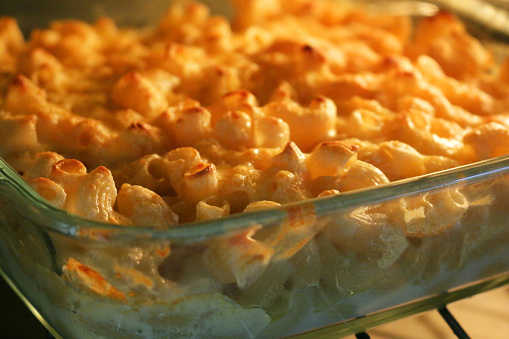

Home Sweet Home Mac and Cheese
This cheese-dense mac and cheese is perfect for any gameday. With just a total prep time of 50 minutes, and making 4 servings, this quick dish will be sure to leave everyone satisfied. Taking the standard macaroni and cheese and adding a breadcrumb topping as well as a paprika sprinkle on top leaves the dish with a wider array of flavors.
Ingredients
- 8 ounces uncooked elbow macaroni
- 1/4 cup butter
- 2.5 tablespoons all-purpose flour
- 3 cups milk
- 2 cups shredded sharp Cheddar cheese
- 1/2 cup grated Parmesan cheese
- 2 tabblespoons butter
- 1/2 cup bread crumbs
- 1 pinch of paprika
Steps
- Preheat the oven to 350 degrees F (175 degrees C)
- Cook macaroni according to the package directions, drain
- Melt butter in a medium skillet over low heat. Gradually add flour, whisking until well combined. Slowly pour in milk, whisking constantly until smooth. Stir in cheeses, and cook over low heat until cheese is melted and the sauce is a little thick. Put macaroni in large casserole dish, and pour sauce over macaroni. Stir well.
- Melt butter in a skillet over medium heat. Add breadcrumbs and brown. Spread over the macaroni and cheese cover. Sprinkle with a little paprika.
- Bake in the preheated oven for 30 minutes. Serve